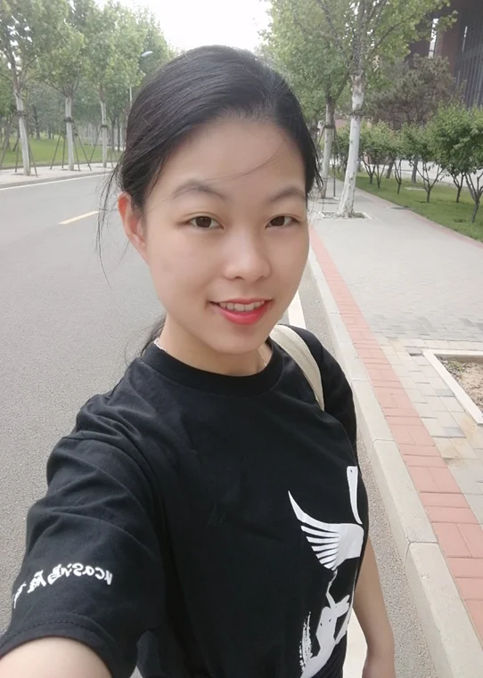
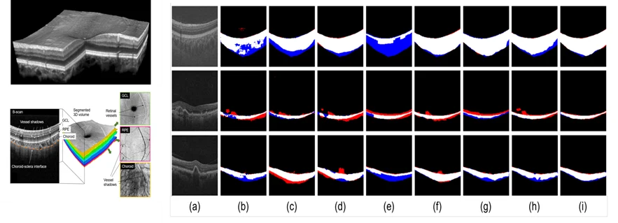

在此次奖学金评选中，Imed团队的张慧红同学喜获国家奖学金及一等学业奖学金。在此次专访中，张慧红同学谈到自己在集中教学期间的学习生活以及自己在imed团队的科研经历，同时也谈到了她如何看待获奖这件事，以及对学弟学妹的鼓励和建议。

张慧红同学入学后，作为国科大统招生赴北京雁栖湖校区进行为期一年的集中教学。这段时间里，她认真学习，在三个学期成绩稳步提升，GPA3.62。此外，她积极参与院校组织的各项活动，如纪念一二·九运动合唱比赛、乒乓球比赛等，均获佳绩。在参观我校校史馆后，张慧红同学深为我校光荣历史所感动与震撼，成为一名校史馆志愿讲解员。同时，她也热心公益，多次通过腾讯公益、飞蚂蚁、水滴筹等平台进行爱心捐赠。在此期间，她获得2018-2019年院三好学生荣誉称号。
在谈到研二回到Imed团队后的科研经历，她表示Imed平台的优质、丰富的资源功不可没。在进行深度学习在眼科医疗图像处理领域的研究中，她能借助组里的OCT设备亲自体验OCT、OCTA、Fundus等模态的眼科图像的拍摄成像，并在杨建龙老师的指导下，在IEEE-JBHI期刊一作发表了题为“Automatic Segmentation and Visualization of Choroid in OCT with Knowledge Infused Deep Learning”的论文。该工作旨在通过优化OCT脉络膜的图像分割与血管成像，为进一步的生物指标提取和辅助诊断打下良好基础。后续的研究工作也已经展开。

在问到如何看待自己获奖时，她认为自己只是在每个阶段做到了该阶段应该做的事，证明自己有在努力。
张慧红同学在专访中感谢学校和团队的平台，老师的教诲，以及同学的友爱互助；在给学弟学妹们留言的时候，她说：“坚持，专注，只要不放弃，一切皆有可能。”